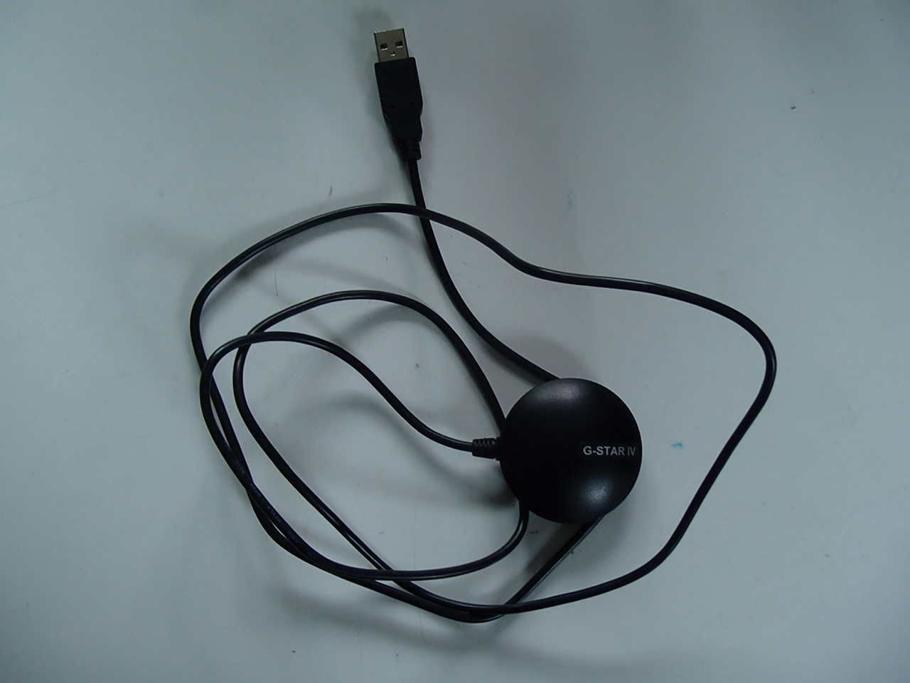
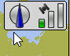
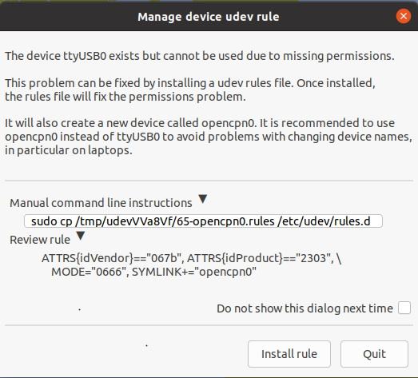
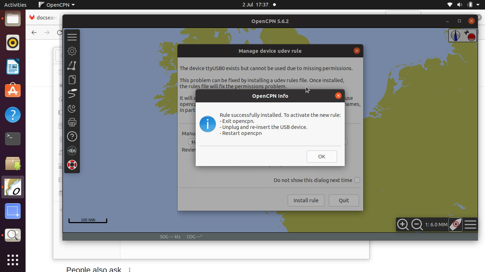
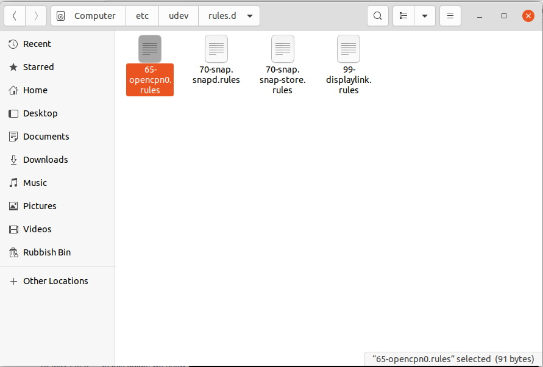

Een GNSS-apparaat toevoegen
Veel verschillende GNSS-apparaten kunnen worden gebruikt om in OpenCPN de positie van de boot weer te geven. Om het eenvoudig te houden wordt de globale BU-353S4 GPS gebruikt om de installatie en het gebruik van een GNSS met OpenCPN te demonstreren

Andere GNSS-apparaten die beschikbaar zijn staan HIER.
Het is mogelijk om de GNSS-ontvanger van een bestaand schip te gebruiken met een seriële naar-USB-adapter.
De GNSS ontvangst heeft een zichtlijn naar satellieten nodig. Mogelijk moet u de GNSS antenne verplaatsen totdat deze een duidelijk beeld naar de ruimte heeft. Op een boot kun je vaststellen of dat er voldoende signaal wordt ontvangen door het polyester laminaat. heen.
Apparaat stuurprogramma’s
Apparaatdrivers voor verschillende OS kunnen worden gedownload HIER
Windows
Download de installatie voor de versie van Windows die u gebruikt.
Installeer de driver met behulp van de installer .exe.
Sluit de GNSS aan. Windows moet het apparaat herkennen en het juiste stuurprogramma daarvoor gebruiken.
Opties Verbindingen
Voeg verbinding toe
Met behulp van de Datapoort lijst selecteert u handige de USB-poort.
Scroll omhoog en klik op Toon NMEA debugvenster. Dit is niet strikt noodzakelijk, maar het geeft een goede indicatie of het GNSS-systeem correct werkt.
Toepassen OK
Je moet de kaart misschien een beetje verplaatsen, zodat de positie van het schip wordt weergegeven.
Het NMEA Debug venster kan gesloten worden met de Close knop.
De kompas/GPS Status Window toont een groene balk  wat de sterkte van het GNSS signaal aangeeft.
De Statusbalk toont de positie van het schip.
Zoom in  het pictogram voor het schip verandert in een afbeelding van het
het pictogram voor het schip verandert in een afbeelding van het  . De muis scroll knop kan ook worden gebruikt om in of uit te zoomen.
. De muis scroll knop kan ook worden gebruikt om in of uit te zoomen.
MacOS
Plug de GNSS in.
Opties Verbindingen
Voeg verbinding toe
Gebruik Serieel

Met de DataPoort lijst selecteer u de /dev/cu.usbserial-1410 optie.

Vink de Toon NMEA debugfenster aan om de GNSS uitvoer te bekijken.
Het NMEA Debug venster kan gesloten worden met de Close knop.
De kompas/GPS Status Window toont een groene balk wat de sterkte van het GNSS signaal aangeeft.
De Statusbalk toont de positie van het schip.
Zoom in het pictogram voor het schip verandert in een afbeelding van de . De muis scroll knop kan ook worden gebruikt om in of uit te zoomen.
Linux
Opties Verbindingen
Voeg verbinding toe
Gebruik van de seriële verbinding de DataPoort lijst met een invoer /dev/ttyUSB0-Prolific ….

Toepassen en vink dan aan Enable voor deze verbinding.
Dit presenteert een bericht over machtigingen.

Regel installeren

OK
Volg het advies om OpenCPN te herstarten.
Er is een regel (symlink) gemaakt voor het gebruik van de GNSS-toepassing.

Als u de GNSS wilt verwijderen en de installatie wilt opschonen, kan de symlink worden verwijderd met behulp van Terminal.

Na het herstarten van OpenCPN en het bewerken van de DataPoort connectie om de symlink opencpn0 te gebruiken verschijnt het schip op de kaart.
Zoom in en de bootpictogram verschijnt.